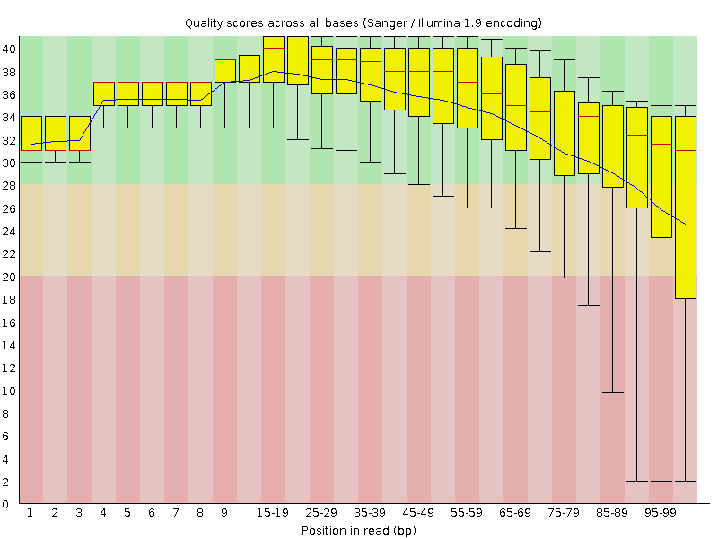
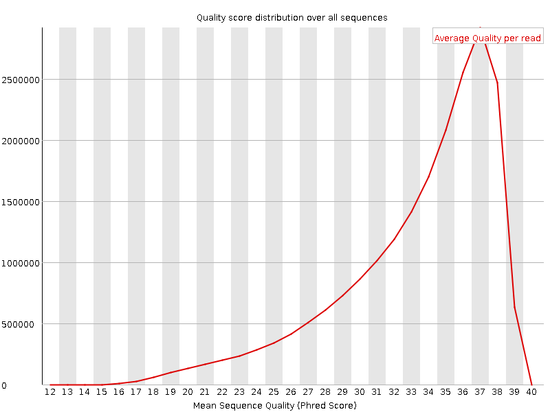
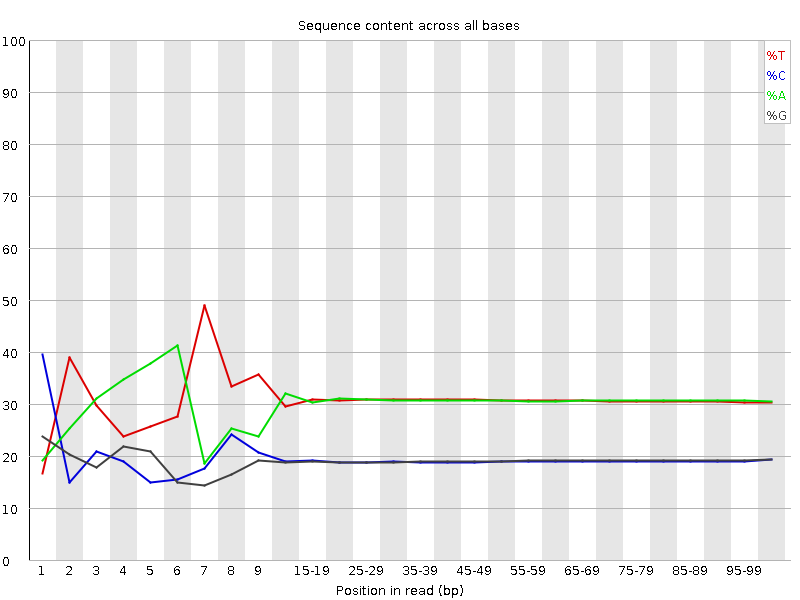
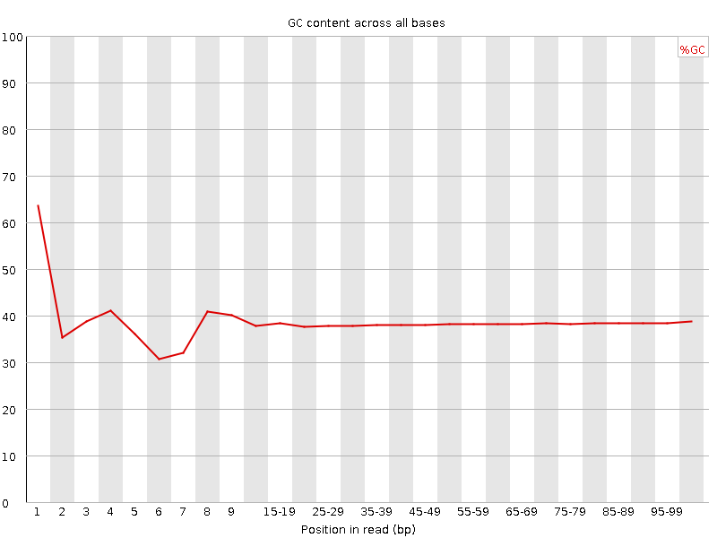
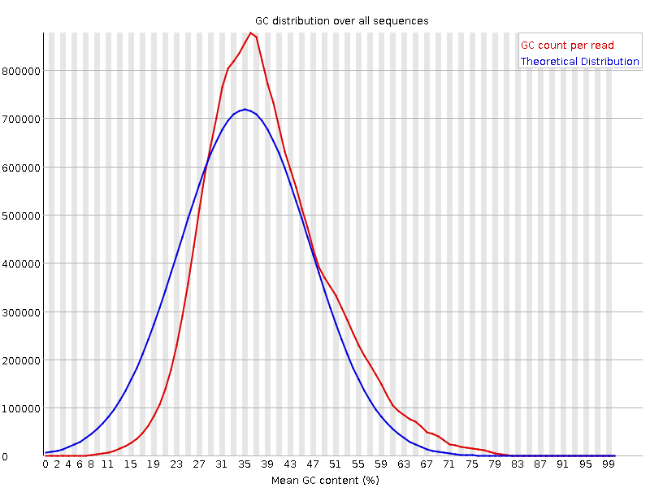
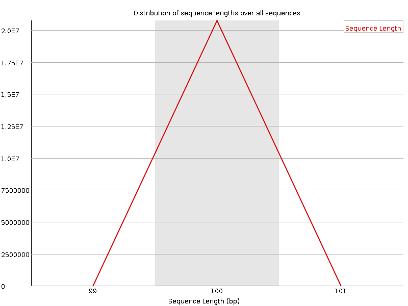
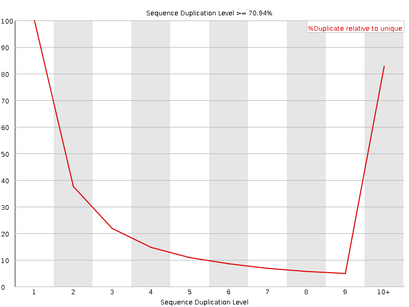
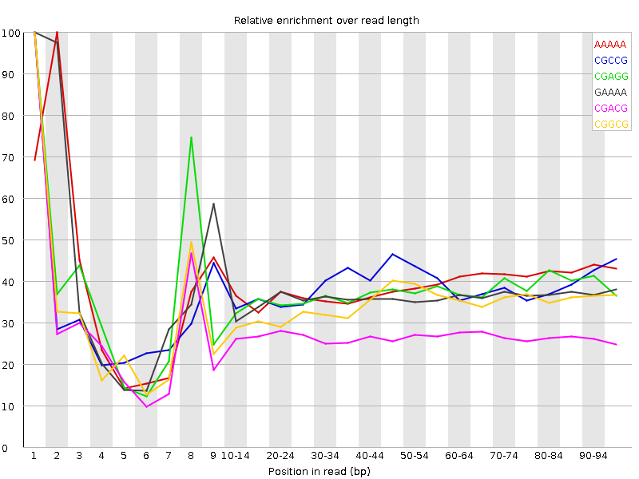

![[OK]](Icons/tick.png) Basic Statistics
Basic Statistics
| Measure | Value |
|---|---|
| Filename | t1.1.fq |
| File type | Conventional base calls |
| Encoding | Sanger / Illumina 1.9 |
| Total Sequences | 20734354 |
| Filtered Sequences | 0 |
| Sequence length | 100 |
| %GC | 38 |
Per base sequence quality

Per sequence quality scores

![[FAIL]](Icons/error.png) Per base sequence content
Per base sequence content

Per base GC content

![[WARN]](Icons/warning.png) Per sequence GC content
Per sequence GC content

Per base N content

Sequence Length Distribution

Sequence Duplication Levels

Overrepresented sequences
No overrepresented sequences
Kmer Content

| Sequence | Count | Obs/Exp Overall | Obs/Exp Max | Max Obs/Exp Position |
|---|---|---|---|---|
| AAAAA | 12936880 | 2.3731494 | 6.0693073 | 2 |
| CGCCG | 1074345 | 2.0489914 | 5.3086715 | 1 |
| CGAGG | 1620795 | 1.947577 | 5.1713758 | 1 |
| GAAAA | 6617750 | 1.944307 | 5.2916083 | 1 |
| CGACG | 1590185 | 1.9021716 | 7.0210414 | 1 |
| CGGCG | 964985 | 1.8487641 | 5.3529778 | 1 |
| TTCCA | 3887125 | 1.8018987 | 5.2001414 | 6 |
| AAAAT | 9229790 | 1.6880921 | 5.101299 | 3 |
| GGAAA | 3583980 | 1.6864711 | 5.0421515 | 1 |
| CGCGG | 875625 | 1.6775639 | 5.919645 | 1 |
| CTCGA | 2204895 | 1.6418743 | 7.106328 | 1 |
| TCGAG | 2193940 | 1.6411234 | 5.3394027 | 7 |
| CGCGA | 1360140 | 1.6269927 | 6.134795 | 1 |
| CTGGA | 2161315 | 1.6167191 | 6.2711463 | 1 |
| CGAGA | 2108400 | 1.581833 | 5.0502267 | 1 |
| CGCCA | 1317490 | 1.5688622 | 5.2963333 | 1 |
| ATCGA | 3218305 | 1.5030893 | 5.818323 | 6 |
| TCCAA | 3211195 | 1.4929998 | 5.082394 | 7 |
| CCGGC | 769135 | 1.4668947 | 5.791278 | 1 |
| CTCGT | 1904200 | 1.4137523 | 6.1626363 | 1 |
| CTCGC | 1174655 | 1.3946224 | 5.358711 | 1 |
| CTCGG | 1116860 | 1.3320165 | 6.322742 | 1 |
| CGAAA | 2775095 | 1.2999499 | 5.104415 | 1 |
| GAATC | 2716645 | 1.2687922 | 5.514147 | 4 |
| AATCG | 2602520 | 1.2154907 | 5.2208877 | 5 |